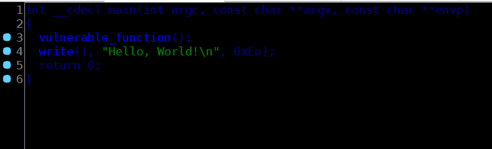
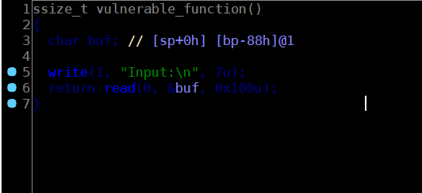
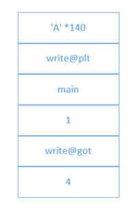
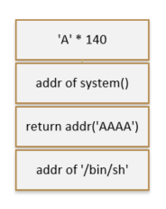

题目
Jarvis OJ-Pwn-level3
解题思路
拿到题目有两个文件：level3和libc-2.19.so
IDA看一下level3：
main函数

vulnerable_function函数

很明显的栈溢出，由于程序中并没有使用system函数，同时我们拿到了libc.so，可以考虑leak出write()的地址来计算system()和'/bin/sh'的地址。
具体流程
泄露write函数地址
从IDA中可以看到buf的大小136字节，加上ebp，最终需要填充140字节，然后是write@plt的地址，接着执行完write()后返回到main(),栈布局如下：

计算system()和 ‘/bin/sh’地址
获取到泄露的write函数地址后，根据公式：
write_target_addr - write_libc = system_target_addr - system_libc
可以求得目标系统上system函数的地址，由于libc中带有/bin/sh,因此可用同样的方法求得sh字符串的地址。
Return-to-libc
常规的ret2libc，栈布局如下：

Exploit
|
|